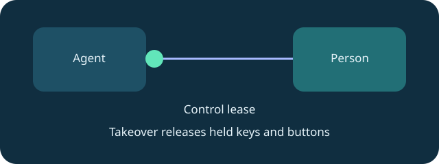
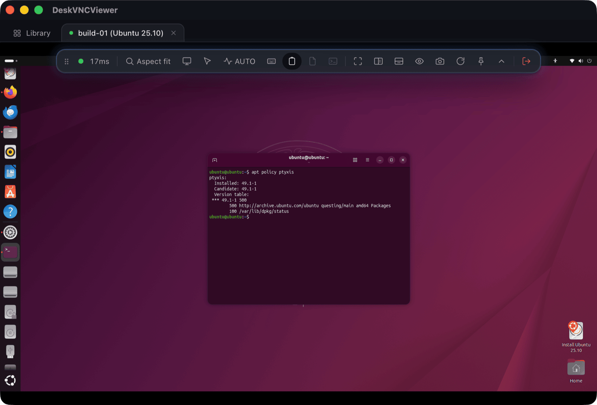

trust
Why the person keeps the wheel during automation
Control leases make human supervision part of the interface.
DeskVNC gives each machine its own control lease. Several machines can support independent agent loops, while a person can reclaim an individual session by clicking into its pane.
Takeover fences the agent out and releases held keys and buttons. That means supervision is not just a promise in a prompt: the control plane governs the right to send input.
Observation fencing complements consent. Geometry generations keep clicks tied to the screen that was read; content fencing checks that a significant repaint has not changed typing context. Read again when the screen changes, and inspect yield_status after a revoked lease.
For a team demonstration, show an agent observing a saved host, acquiring control and acting, then let a person take over. The useful outcome is a visible handoff, not a claim that every task should run unattended.


Technical reference: DeskVNC upstream documentation. Reviewed against the saved AGENTS.md snapshot.